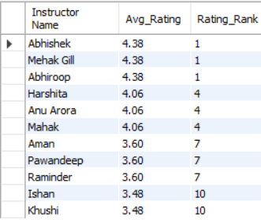
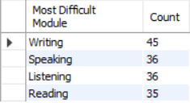
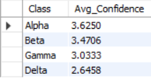
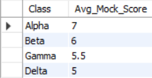
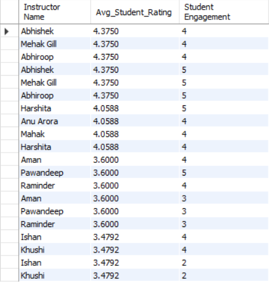
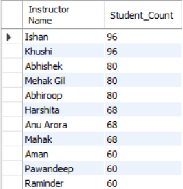
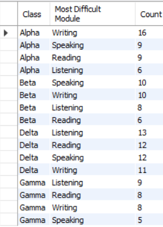
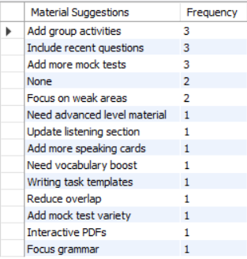
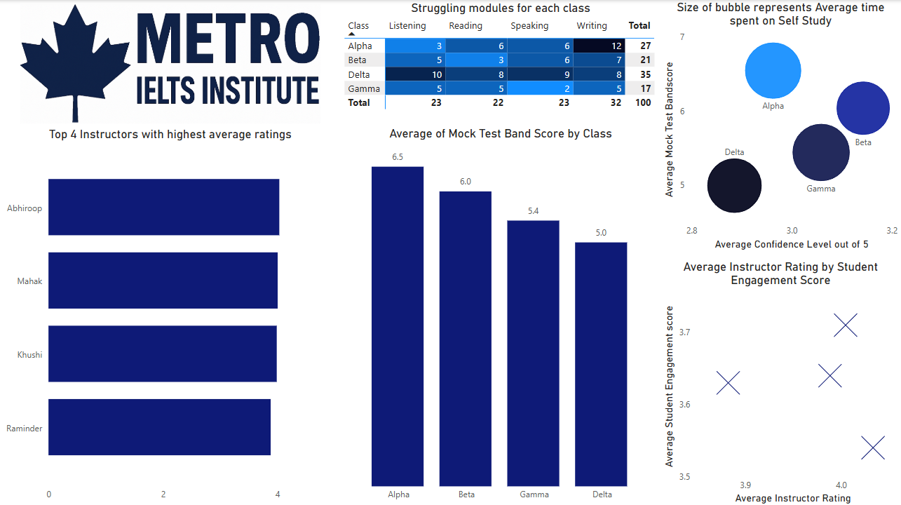

IELTS Institute Analytics Project
This project focused on analyzing student and instructor data from an IELTS training institute using Survey Design, SQL and Power BI. The goal was to uncover insights that would enhance instruction quality and student outcomes.
Project Goals
The objective was to identify strengths and weaknesses across batches and instructors, based on key metrics such as student ratings, confidence levels(how confident do students feel about their results), self-study hours, and mock test scores. This helped uncover actionable insights for operational improvement.
Research Design & Data Collection
To gather data for this project, I created two main tables: Student and Instructor. Some of the survey questions and observation points used were:
- Student: What module do you find the most difficult?
- Student: How many hours do you study per day on average?
- Student: How would you rate your instructor?
- Instructor: How many extra classes are students requesting from you?
- Instructor: What material improvements would you suggest?
Data was collected using google forms and cleaned using Excel before analysis.
SQL Queries & Outputs
1. Instructor with Highest Average Student Rating
SELECT
i.`Instructor Name`,
ROUND(AVG(s.`Instructor Rating`), 2) AS Avg_Rating,
RANK() OVER (ORDER BY AVG(s.`Instructor Rating`) DESC) AS Rating_Rank
FROM
Student s
JOIN
Instructor i ON s.`Class` = i.`Class`
GROUP BY
i.`Instructor Name`;

2. Most Difficult IELTS Module
SELECT
s.`Most Difficult Module`,
COUNT(*) AS Count
FROM
Student s
GROUP BY
s.`Most Difficult Module`
ORDER BY
Count DESC;

3. Average Confidence Score Per Class
SELECT
s.`Class`,
AVG(s.`Confidence Level`) AS Avg_Confidence
FROM
Student s
GROUP BY
s.`Class`
ORDER BY
Avg_Confidence DESC;

4. Average Mock Test Scores per Class
SELECT
s.`Class`,
ROUND(AVG(`Mock Test Band Score`) * 2) / 2 AS Avg_Mock_Score
FROM
Student s
GROUP BY
s.`Class`
ORDER BY
Avg_Mock_Score DESC;

5. Average Student Rating vs Instructor Engagement
SELECT
i.`Instructor Name`,
AVG(s.`Instructor Rating`) AS Avg_Student_Rating,
i.`Student Engagement`
FROM
Student s
JOIN
Instructor i ON s.`Class` = i.`Class`
GROUP BY
i.`Instructor Name`, i.`Student Engagement`
ORDER BY
Avg_Student_Rating DESC;

6. Instructor Workload (Student Count)
SELECT
i.`Instructor Name`,
COUNT(s.`Student ID`) AS Student_Count
FROM
Student s
JOIN
Instructor i ON s.`Class` = i.`Class`
GROUP BY
i.`Instructor Name`
ORDER BY
Student_Count DESC;

7. Most difficult module per class
SELECT
s.`Class`,
s.`Most Difficult Module`,
COUNT(*) AS Count
FROM
Student s
GROUP BY
s.`Class`, s.`Most Difficult Module`
ORDER BY
s.`Class`, Count DESC;

8. Top Recurring Material Suggestions
SELECT
i.`Material Suggestions`,
COUNT(*) AS Frequency
FROM
Instructor i
GROUP BY
i.`Material Suggestions`
ORDER BY
Frequency DESC;

Power BI Dashboards
To visualize the insights from SQL queries, I created this dashboard in Power BI:

Insights
- Instructors with highest ratings also have highest engagement levels.
- Mock test scores and confidence levels are correlated with self-study hours. Except for Alpha class.
- Writing module is overall the toughest module for all students
Business Suggestions
- Instructors who have low level engagement scores need to be trained on engagement strategies.
- Alpha Class needs to be given Special encouragement as despite being the best performing, they are not the most confident aboput their result.
- Writing module Deserves special attention as most students struggle with it.
This analysis was used by the institute to improve student performance and instructor effectiveness through data-driven interventions.